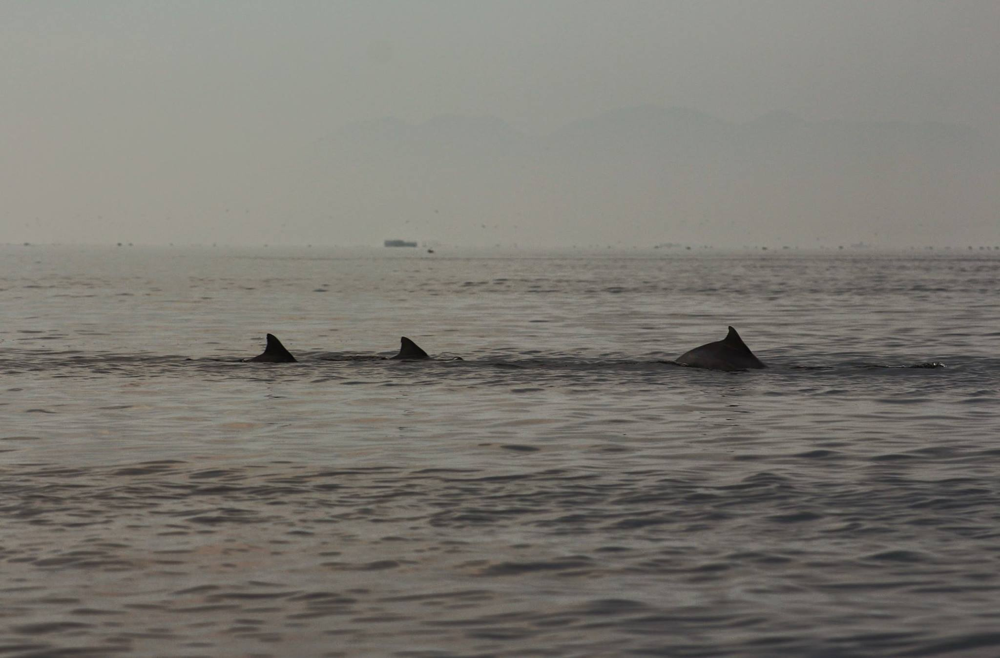
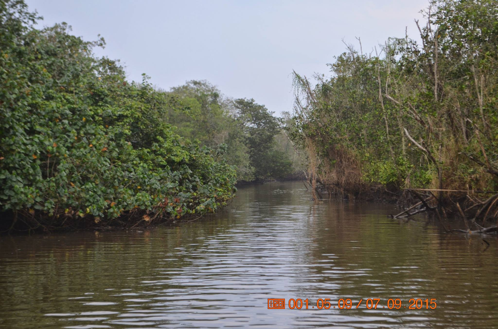
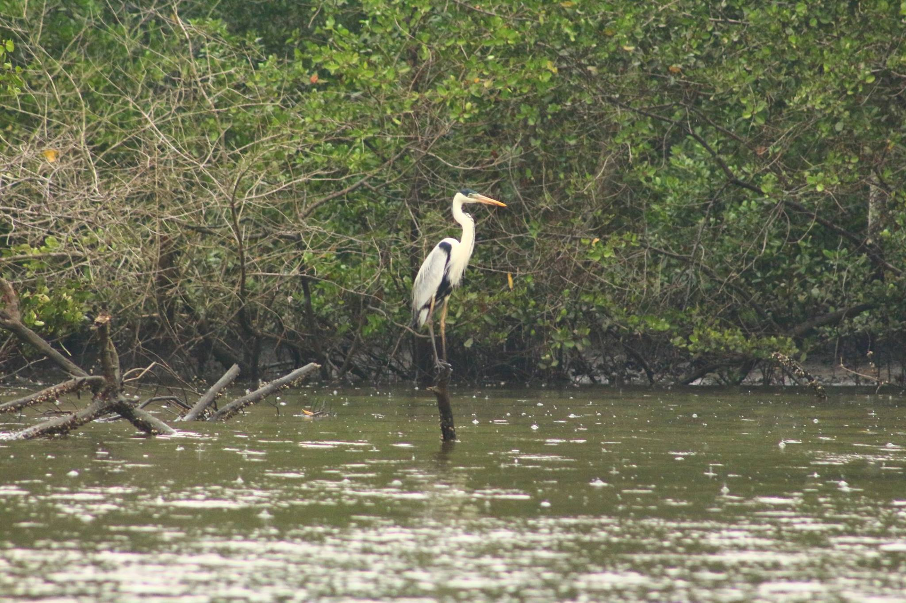
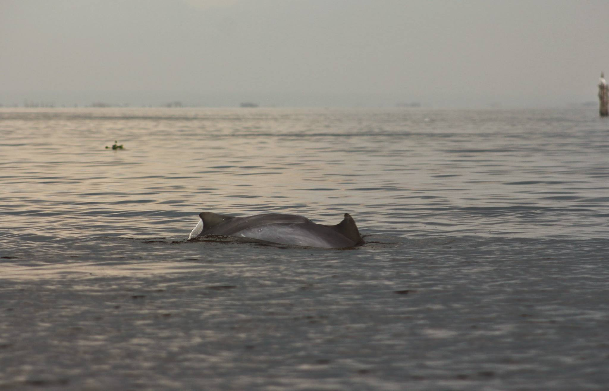
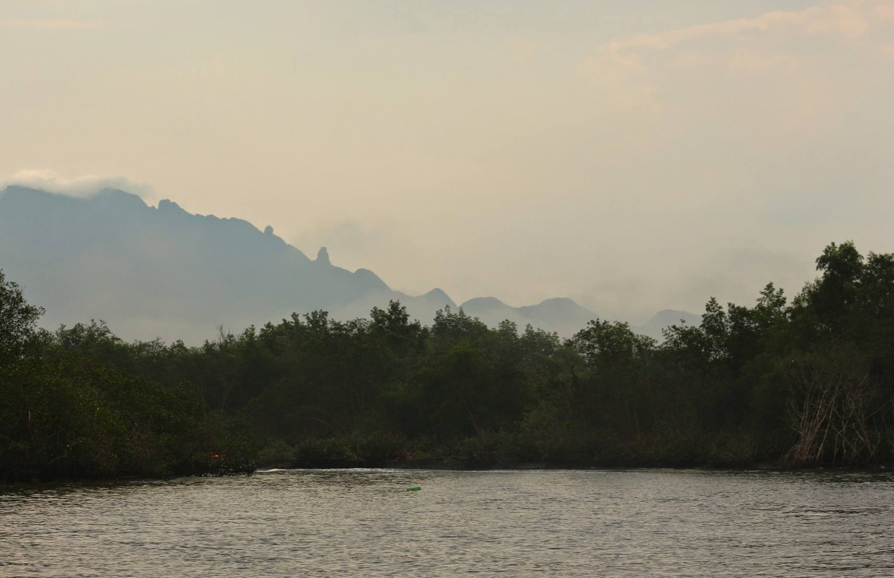

Pantanal Fluminense
A APA também abrange parte do recôncavo da Baía de Guanabara, que ainda abriga currais de pesca e os botos-cinza. Apesar de sua graciosidade e encanto, estes animais são na verdade um símbolo de resistência ao violento processo de degradação de seu habitat. A APA de Guapimirim é a responsável pela manutenção do único manguezal preservado do entorno da Baía – que, na década de 80, chegou a ter mais de 500 golfinhos em suas águas (hoje são menos de 30).